Objectifs
Cartographier la frontière USA - Mexique
Import des données et mise en fome
- Installation des packages utiles
library("sf")## Linking to GEOS 3.7.1, GDAL 2.4.2, PROJ 5.2.0library("rnaturalearth")
library("geojsonsf")
library("cartography")
library("cartogram")
library("leaflet")
library("SpatialPosition")
library("units")## udunits system database from /usr/share/xml/udunitslibrary("OECD")
library("ggplot2")- Import des géométries
# Pays (source : natural earth)
countries <- ne_countries(scale = 50, type = "countries", continent = NULL,
country = NULL, geounit = NULL, sovereignty = NULL,
returnclass = "sf")
countries <- countries[countries$adm0_a3 %in% c("MEX","USA"),]
# Mur de séparation (source : https://data.world/carlvlewis/border-fence-boundaries-u-s-mexico)
fences <- geojson_sf("data/data.world/border-fence.geojson")
# Rivières (source : natural earth)
rivers <- ne_download(scale = 50, type = "rivers_lake_centerlines", category = "physical", returnclass = "sf")## OGR data source with driver: ESRI Shapefile
## Source: "/tmp/Rtmp8TxXys", layer: "ne_50m_rivers_lake_centerlines"
## with 462 features
## It has 32 fields
## Integer64 fields read as strings: ne_id## Warning in rgdal::readOGR(destdir, file_name, encoding = "UTF-8",
## stringsAsFactors = FALSE, : Dropping null geometries: 461# Trait de côte (source : natural earth)
coastline <- ne_download(scale = 50, type = "coastline", category = "physical", returnclass = "sf")## OGR data source with driver: ESRI Shapefile
## Source: "/tmp/Rtmp8TxXys", layer: "ne_50m_coastline"
## with 1428 features
## It has 3 fields
## Integer64 fields read as strings: scalerank# Océans (source : natural earth)
ocean <- ne_download(scale = 50, type = "ocean", category = "physical", returnclass = "sf")## OGR data source with driver: ESRI Shapefile
## Source: "/tmp/Rtmp8TxXys", layer: "ne_50m_ocean"
## with 1 features
## It has 3 fields
## Integer64 fields read as strings: scalerank- Mise en forme des géométries (emprise, projection)
# choix de la projection
prj <- "+proj=aea +lat_1=14.5 +lat_2=32.5 +lat_0=24 +lon_0=-105 +x_0=0 +y_0=0 +ellps=GRS80 +datum=NAD83 +units=m +no_defs"
countries <- st_transform(countries,crs = prj)
fences <- st_transform(fences,crs = prj)
rivers <- st_transform(rivers,crs = prj)
coastline <- st_transform(coastline,crs = prj)
ocean <- st_transform(ocean,crs = prj)
# Choix de l'emprise (un peu de bidouille, pas optimal)
bb <- c(-1342784.0, -739750.5, 793341.2, 1317849.8)
d <- 100000
bbox <- st_as_sfc(st_bbox(c(xmin = bb[1]-2*d , xmax = bb[3]+2*d, ymax = bb[2]-d, ymin = bb[4]+d), crs = prj))- Création d’un template cartographique
lay <- function(title = ""){
authors <- "N. Lambert & R. Ysebaert, 2019\nData source: IOM, 2019 - Didelon, Vandermotten, Dessouroux, 2019"
par(mar = c(0,0,1.2,0))
plot(st_geometry(ocean), col= "#b8d5e3", border = NA, xlim = bb[c(1,3)], ylim = bb[c(2,4)])
plot(st_geometry(countries) + c(-10000, -10000), col ="#827e6c50", border = NA, add= T)
plot(st_geometry(countries), col= "#ede6bb", border = "white", cex = 0.5, add=T)
plot(st_geometry(coastline), col= "#6d9cb3",lwd = 1 ,add= T)
plot(st_geometry(rivers), col= "#6d9cb3",lwd = 1 ,add= T)
plot(st_geometry(fences), col= "#3d3c3c",lwd = 3 ,add= T)
layoutLayer(title = title,
author = authors,
scale = 300, south = TRUE, frame = TRUE,
col = "#6d9cb3", coltitle = "white")
}
lay("Template cartographique")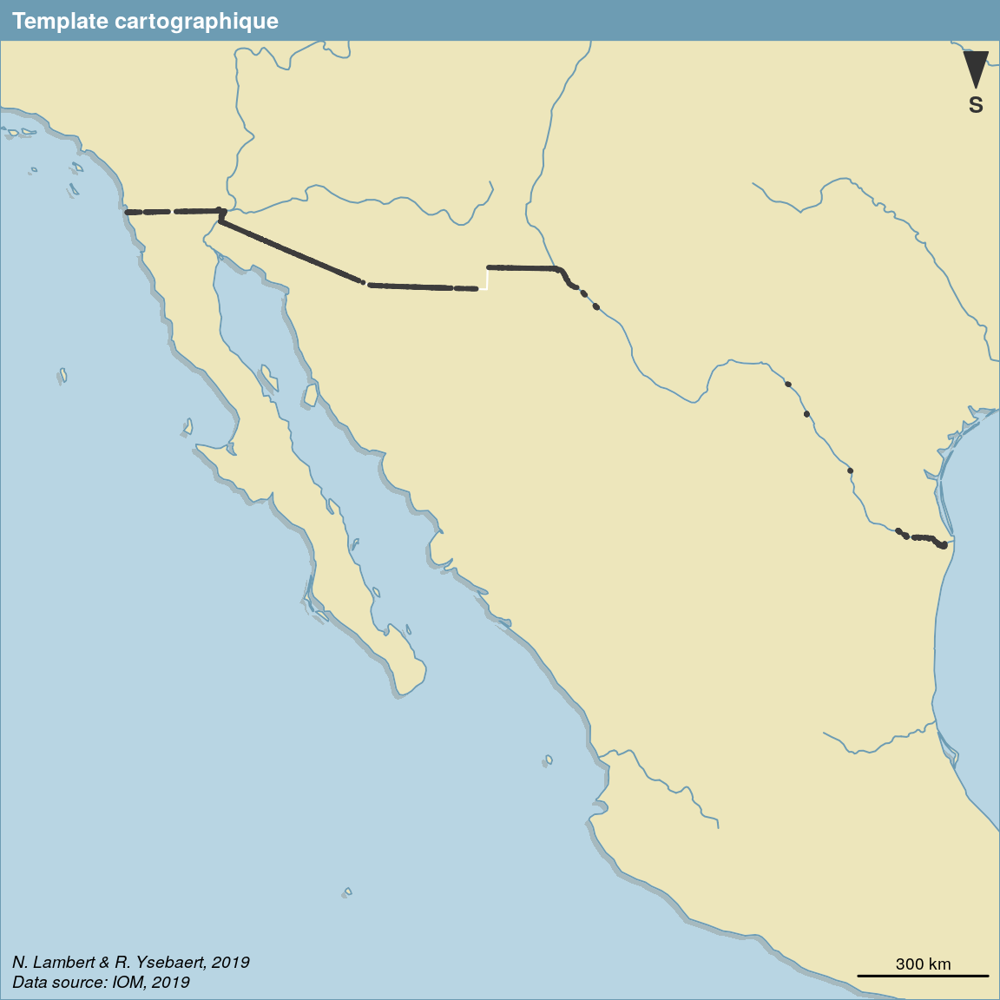
Radiographie de la frontière
- Evolution du PIB dans le temps
as.data.frame(search_dataset("GDP", data = get_datasets()))## id
## 1 FIGURE1_E_AEO2013
## 2 SNA_TABLE1
## 3 PPPGDP
## 4 AEO11_OVERVIEW_CHAPTER1_TAB2_EN
## 5 AEO11_COUNTRYNOTES_TAB5_EN
## 6 AEO11_INDEPTH_CHAPTER6_FIG11_EN
## 7 AEO11_INDEPTH_CHAPTER6_TAB11_EN
## 8 AEO11_COUNTRYNOTES_TAB4_EN
## 9 AEO11_COUNTRYNOTES_FIG2_EN
## 10 AEO11_COUNTRYNOTES_TAB2_EN
## 11 AEO2012_CH6_FIG20
## 12 AEO2012_CH1_FIG4
## 13 AEO2012_CH2_FIG1B
## 14 AEO2012_CH2_FIG4
## 15 AEO2012_CH2_FIG5A
## 16 AEO2012_CH2_FIG9
## 17 FIGURE1_W_AEO2013
## 18 SNA_TABLE1_SNA93
## 19 SNA_TABLE1_TRAINING
## 20 FIGURE1_N_AEO2013
## 21 FIGURE1_C_AEO2013
## 22 FIGURE1_S_AEO2013
## 23 TABLE2_AEO2013_V2
## 24 TABLE3_AEO2013_V2
## 25 TABLE4_AEO2013_V2
## 26 PDB_LV
## 27 PDB_GR
## 28 SNA_TABLE1_ARCHIVE
## title
## 1 Figure 1: Real GDP growth 2013 (East)
## 2 1. Gross domestic product (GDP)
## 3 Purchasing Power Parities for GDP and related indicators
## 4 Table 1.1: Growth by regions (real GDP growth in percentage)
## 5 Table 5: Current account (percentage of GDP)
## 6 Figure 6.11: Africa’s post-HIPC debt (external debt in percentage of GDP, 1995-2009)
## 7 Table 6.11: Ethiopia, public debt in percentage of GDP
## 8 Table 4: Public finances (percentage of GDP)
## 9 Figure 2: Stock of total external debt (percentage of GDP) and debt service (percentage of exports of goods and services)
## 10 Table 2: GDP by sector (in percentage)
## 11 Figure 20: Household enterprises are the fastest growing livelihood sector in low income countries, ordered by GDP per capita
## 12 2012 Figure 1.4: Growth of GDP by countries (%)
## 13 2012 Figure 2.1b: Domestic and external financial resources (% GDP, 2010)
## 14 2012 Figure 2.4: Oil-importing countries attracted more FDI as a share of GDP than oil-exporting countries
## 15 2012 Figure 2.5a: African FDI outflows mainly go from resource-rich countries to OECD nations (% of GDP)
## 16 2012 Figure 2.9: Tax revenues in Africa represent an increasing share of GDP during the last decade
## 17 Figure 1: Real GDP growth 2013 (West)
## 18 1. Gross domestic product (GDP), SNA93
## 19 1. Gross domestic product (GDP) Training2
## 20 Figure 1: Real GDP Growth 2013 (North)
## 21 Figure 1: Real GDP growth 2013 (Central)
## 22 Figure 1: Real GDP growth 2013 (South)
## 23 Table 2: GDP by Sector (percentage of GDP)
## 24 Table 3: Public Finances (percentage of GDP)
## 25 Table 4: Current Account (percentage of GDP)
## 26 Level of GDP per capita and productivity
## 27 Growth in GDP per capita, productivity and ULC
## 28 1. Gross domestic product (GDP), 2019 archivedstruc <- get_data_structure("PDB_LV")
str(dstruc, max.level = 2)## List of 10
## $ VAR_DESC :'data.frame': 10 obs. of 2 variables:
## ..$ id : chr [1:10] "LOCATION" "SUBJECT" "MEASURE" "TIME" ...
## ..$ description: chr [1:10] "Country" "Subject" "Measure" "Time" ...
## $ LOCATION :'data.frame': 54 obs. of 2 variables:
## ..$ id : chr [1:54] "AUS" "AUT" "BEL" "CAN" ...
## ..$ label: chr [1:54] "Australia" "Austria" "Belgium" "Canada" ...
## $ SUBJECT :'data.frame': 12 obs. of 2 variables:
## ..$ id : chr [1:12] "T_GDP" "T_POPTOT" "T_GDPPOP" "T_HRSTO" ...
## ..$ label: chr [1:12] "Gross Domestic Product (GDP); millions" "Total population; persons; thousands" "GDP per head of population" "Hours worked for total employment; millions" ...
## $ MEASURE :'data.frame': 6 obs. of 2 variables:
## ..$ id : chr [1:6] "C" "CPC" "VPVOB" "PCTUS" ...
## ..$ label: chr [1:6] "National currency, current prices" "USD, current prices, current PPPs" "USD, constant prices, 2010 PPPs" "As % of the USA (USA=100)" ...
## $ TIME :'data.frame': 49 obs. of 2 variables:
## ..$ id : chr [1:49] "1970" "1971" "1972" "1973" ...
## ..$ label: chr [1:49] "1970" "1971" "1972" "1973" ...
## $ OBS_STATUS :'data.frame': 18 obs. of 2 variables:
## ..$ id : chr [1:18] "b" "e" "q" "B" ...
## ..$ label: chr [1:18] "break in series" "estimates" "data point from OECD Quarterly National Accounts" "Break" ...
## $ UNIT :'data.frame': 316 obs. of 2 variables:
## ..$ id : chr [1:316] "1" "GRWH" "AVGRW" "IDX" ...
## ..$ label: chr [1:316] "RATIOS" "Growth rate" "Average growth rate" "Index" ...
## $ POWERCODE :'data.frame': 32 obs. of 2 variables:
## ..$ id : chr [1:32] "0" "1" "2" "3" ...
## ..$ label: chr [1:32] "Units" "Tens" "Hundreds" "Thousands" ...
## $ REFERENCEPERIOD:'data.frame': 92 obs. of 2 variables:
## ..$ id : chr [1:92] "2013_100" "2012_100" "2011_100" "2010_100" ...
## ..$ label: chr [1:92] "2013=100" "2012=100" "2011=100" "2010=100" ...
## $ TIME_FORMAT :'data.frame': 5 obs. of 2 variables:
## ..$ id : chr [1:5] "P1Y" "P1M" "P3M" "P6M" ...
## ..$ label: chr [1:5] "Annual" "Monthly" "Quarterly" "Half-yearly" ...df <- get_dataset(dataset = "PDB_LV", filter = list(c("MEX", "USA","OECD"),
"T_GDPPOP",
"CPC"))
df$obsTime <- as.numeric(df$obsTime)
qplot(data = df, x = obsTime, y = obsValue, color = LOCATION, geom = "line") +
labs(x = NULL, y = "USD, current prices, current PPPs", color = NULL,
title = "GDP per head of population")
- Evolution des moins de 20 ans dans le temps
as.data.frame(search_dataset("population", data = get_datasets()))## id
## 1 ALFS_POP_VITAL
## 2 ALFS_POP_LABOUR
## 3 SNA_TABLE3
## 4 POP_FIVE_HIST
## 5 RPOP
## 6 SNA_TABLE3_SNA93
## 7 POP_PROJ
## 8 WATER_TREAT
## 9 AEO2012_CH6_FIG5
## 10 AEO2012_CH6_BOX6
## 11 HISTPOP
## 12 POPPROJ
## 13 EDU_DEM
## 14 SNA_TABLE3_ARCHIVE
## title
## 1 Population and Vital Statistics
## 2 Population and Labour Force
## 3 3. Population and employment by main activity
## 4 Population
## 5 Total population by sex and age
## 6 3. Population and employment by main activity, SNA93
## 7 Historical population data and projections (1950-2050)
## 8 Wastewater treatment (% population connected)
## 9 Figure 5: Employment Rate to working age population in Africa and comparators
## 10 Box 6: Rural vs. Agricultural population in Nigeria (1980-2010, in thousands)
## 11 Historical population
## 12 Population projections
## 13 Population data
## 14 3. Population and employment by main activity, 2019 archivedstruc <- get_data_structure("POP_PROJ")
dstruc$VAR_DESC## id description
## 1 LOCATION Country
## 2 SEX Sex
## 3 AGE Age
## 4 VAR Variant
## 5 TIME Time
## 6 OBS_VALUE Observation Value
## 7 TIME_FORMAT Time Format
## 8 OBS_STATUS Observation Status
## 9 UNIT Unit
## 10 POWERCODE Unit multiplier
## 11 REFERENCEPERIOD Reference perioddstruc$AGE## id label
## 1 D199G501 Population (hist&proj) 15-64
## 2 D1 Population by broad age groups
## 3 D199G502 Population (hist&proj) 20-64
## 4 D199G5L1 Population (hist&proj) < 15
## 5 D199G5L2 Population (hist&proj) < 20
## 6 D199G5M1 Population (hist&proj) 65+
## 7 D199G5TT Population (hist&proj) All ages
## 8 D199L500 Population (hist&proj) 00-04
## 9 D199L505 Population (hist&proj) 05-09
## 10 D199L510 Population (hist&proj) 10-14
## 11 D199L515 Population (hist&proj) 15-19
## 12 D199L520 Population (hist&proj) 20-24
## 13 D199L525 Population (hist&proj) 25-29
## 14 D199L530 Population (hist&proj) 30-34
## 15 D199L535 Population (hist&proj) 35-39
## 16 D199L540 Population (hist&proj) 40-44
## 17 D199L545 Population (hist&proj) 45-49
## 18 D199L550 Population (hist&proj) 50-54
## 19 D199L555 Population (hist&proj) 55-59
## 20 D199L560 Population (hist&proj) 60-64
## 21 D199L565 Population (hist&proj) 65-69
## 22 D199L570 Population (hist&proj) 70-74
## 23 D199L575 Population (hist&proj) 75-79
## 24 D199L580 Population (hist&proj) 80-84
## 25 D199L5M8 Population (hist&proj) 85+
## 26 D199L5TT Population (hist&proj) All ages
## 27 D199G5M2 Population (hist&proj) 80+
## 28 D1TTR5Y1 Youth (-15) Dependency Ratio (15-64)
## 29 D1TTR5Y2 Youth (-20) Dependency Ratio (20-64)
## 30 D1TTR5Y3 Youth (-15) Dependency Ratio (All ages)
## 31 D1TTR5Y4 Youth (-20) Dependency Ratio (All ages)
## 32 D1TTR5O1 Old (+65) Dependency Ratio (15-64)
## 33 D1TTR5O2 Old (+65) Dependency Ratio (20-64)
## 34 D1TTR5O3 Old (+65) Dependency Ratio (All ages)
## 35 D1TTR5T1 Age(-15 & +65) Dependency Ratio (15-64)
## 36 D1TTR5T2 Age(-20 & +65) Dependency Ratio (20-64)
## 37 D1TTR5T3 Age(-15 & +65) Dependency Ratio (All ages)
## 38 D1TTR5T4 Age(-20 & +65) Dependency Ratio (All ages)
## 39 D1TTR5O4 Share (80+) in all ages population
## 40 D1TTR5W1 Working Age (15-64) per Pension Age (+65)
## 41 D1TTR5W2 Working Age (20-64) per Pension Age (+65)
## 42 D1TTR5W0 Working Age (15-64) per all ages population
## 43 D199L5M3 Population (hist&proj) 75+filter_list <- list(c("MEX","USA","OECD"),"TT","D1TTR5Y4")
df <- as.data.frame(get_dataset(dataset = "POP_PROJ", filter = filter_list))
df$obsTime <- as.numeric(df$obsTime)
qplot(data = df, x = obsTime, y = obsValue, color = LOCATION, geom = "line") +
labs(x = NULL, y = "%", color = NULL,
title = "Part de la population âgée de moins de 20 ans")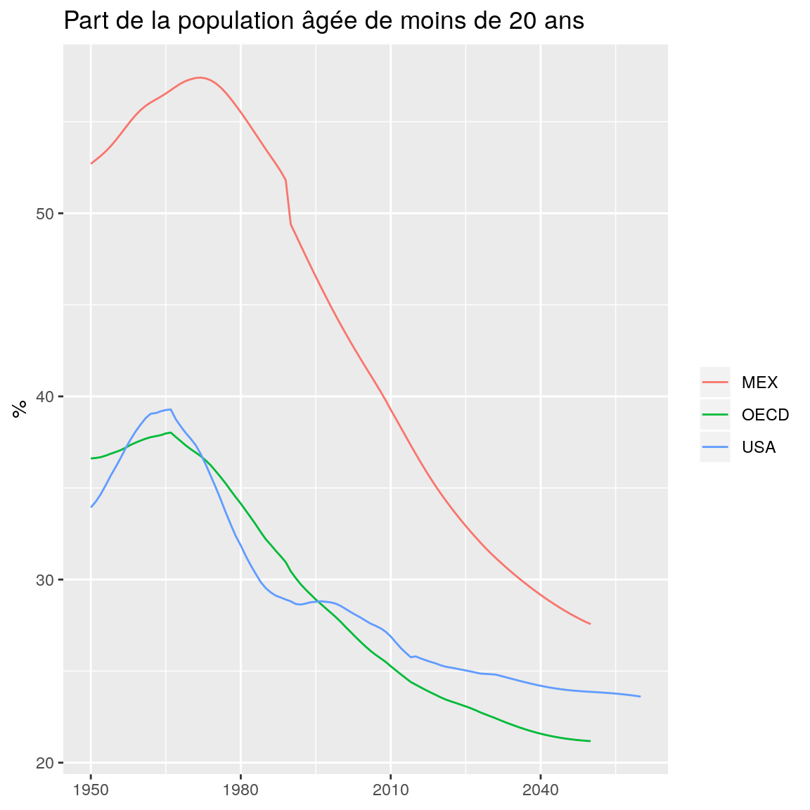
- Cartographie des ruptures spatiales
# --- admin level 12
subregions <- st_read(dsn = "data/regions/mex_us_admin_1.shp",options = "ENCODING=UTF-8",
stringsAsFactors = FALSE)## options: ENCODING=UTF-8
## Reading layer `mex_us_admin_1' from data source `/home/nlambert/Documents/R/mexusaborder/data/regions/mex_us_admin_1.shp' using driver `ESRI Shapefile'
## Simple feature collection with 81 features and 1 field
## geometry type: MULTIPOLYGON
## dimension: XY
## bbox: xmin: -124.71 ymin: 14.54541 xmax: -66.98702 ymax: 49.36967
## epsg (SRID): 4326
## proj4string: +proj=longlat +datum=WGS84 +no_defssubregions <- st_transform(subregions,crs = prj)
# DATA -- PIB & demo (level 1-2)
pib <- read.csv("data/regions/PIB.csv", sep = "\t",encoding = "UTF-8", dec = ",",
stringsAsFactors=FALSE)
pop <- read.csv("data/regions/POP.csv", sep = "\t", encoding = "UTF-8", dec = ",",
stringsAsFactors=FALSE)
subregions <- merge (x = subregions, y = pib,
by.x = "ID_ADMIN_1",
by.y = "ID_ADMIN",
all.x = TRUE)
subregions <- merge (x = subregions, y = pop,
by.x = "ID_ADMIN_1",
by.y = "ID_ADMIN",
all.x = TRUE)
# Intersect with bounding box (pas optimal)
#bbox <- st_as_sfc(st_bbox(c(xmin = -1832288 , xmax = 1500000, ymax = 1450000, ymin = -830000), crs = prj))
#bboxocean <- st_as_sfc(st_bbox(c(xmin = -1342784, xmax = 93341.2, ymin = -739750.5, ymax = 1317850)))
subregions1 <- st_intersection(x = subregions, st_geometry(bbox))## Warning: attribute variables are assumed to be spatially constant
## throughout all geometries- Indice de vieillessement
par(mar = c(0,0,1.2,0))
lay()
choroLayer(x = subregions1, var = "POP65_POP15",
breaks = c(min(subregions1$POP65_POP15, na.rm = T),
20,25,35,50,65,
max(subregions1$POP65_POP15, na.rm = T)),
col = carto.pal(pal1 = "green.pal", n1 = 3,
pal2 = "red.pal", n2 = 3),
legend.pos = "left",
legend.title.txt = "Rapport entre la\npopulation âgée de\nplus de 65 ans\net la population âgée\nde moins de 15 ans\nen 2015 (%)",
border = NA,
add = TRUE)
plot(st_geometry(coastline), col= "#6d9cb3",lwd = 1 ,add= T)
# Get borders
subregions.borders <- getBorders(subregions1)
discLayer(x = subregions.borders, df = subregions1,
var = "POP65_POP15", col="black", nclass=3,
method="equal", threshold = 0.4, sizemin = 0.5,
sizemax = 10, type = "abs",legend.values.rnd = 0,
legend.title.txt = "Discontinuités sur l'indice de veillissement 2015\n(différences absolues)",
legend.pos = "bottomleft", add=TRUE)
layoutLayer(title = "Une barrière démographique... ",
scale = 300, south = TRUE, frame = TRUE,
col = "#6d9cb3", coltitle = "white")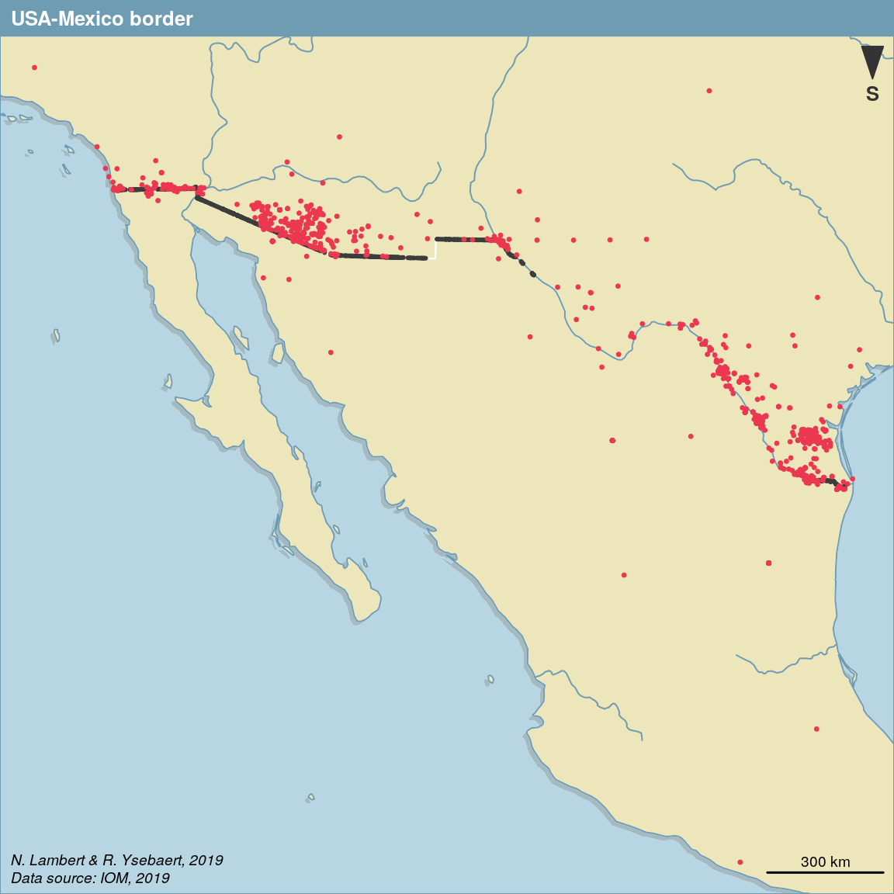
- Produit intérieur brut
lay()
choroLayer(x = subregions1, var = "PIB100_2017",
breaks = c(min(subregions1$PIB100_2017, na.rm = T),
75,90,100,125,150,200,
max(subregions1$PIB100_2017, na.rm = T)),
col = carto.pal(pal1 = "red.pal", n1 = 3,
pal2 = "green.pal", n2 = 4),
legend.pos = "left",
legend.title.txt = "PIB par habitant 2017\n(100 = moyenne mondiale)",
border = NA,
add = TRUE)
plot(st_geometry(coastline), col= "#6d9cb3",lwd = 1 ,add= T)
# Get borders
discLayer(x = subregions.borders, df = subregions1,
var = "PIB100_2017", col="black", nclass=3,
method="equal", threshold = 0.2, sizemin = 0.5,
sizemax = 10, type = "abs",legend.values.rnd = 0,
legend.title.txt = "Discontinuités de PIB par habitant 2017\n(différences absolues)",
legend.pos = "bottomleft", add=TRUE)
layoutLayer(title = "Doublé d'un mur de richesse... Mais quelles conséquences ?",
scale = 300, south = TRUE, frame = TRUE,
col = "#6d9cb3", coltitle = "white")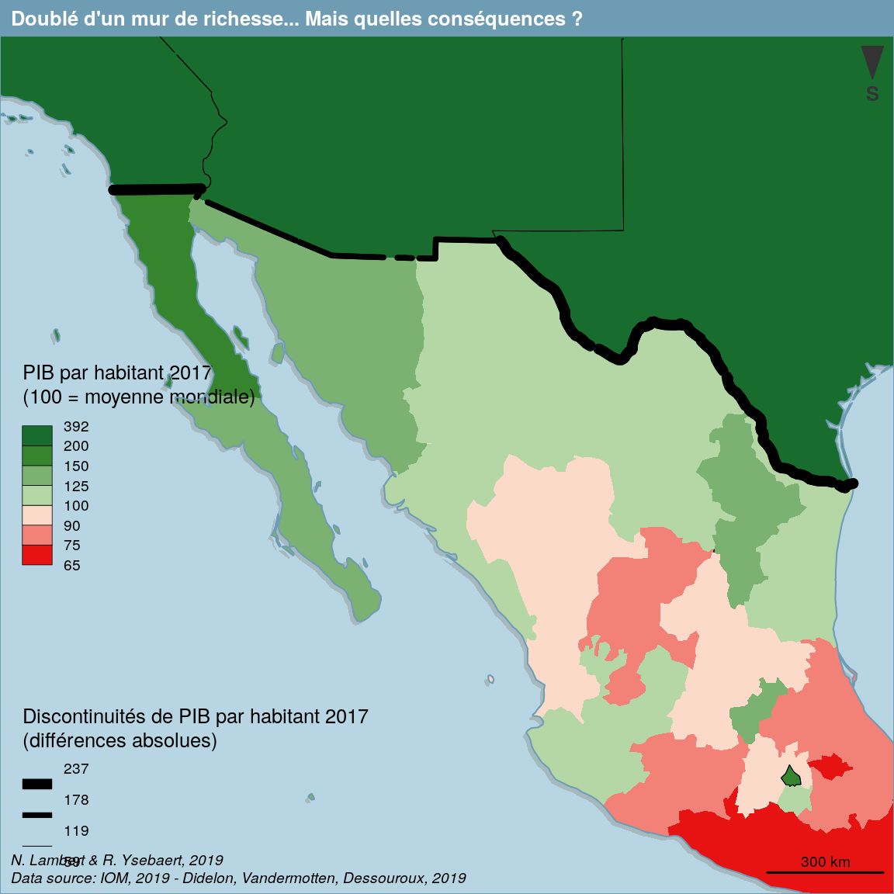
- Anamorphose
library(cartogram)
subregions <- st_cast(subregions, "MULTIPOLYGON")
subregions_cont <- cartogram_dorling(subregions,weight = "POP_2015")
subregions_cont <- cartogram_cont(subregions,weight = "POP_2015", itermax = 50)## Mean size error for iteration 1: 3.28813955268929## Mean size error for iteration 2: 2.22905711837898## Mean size error for iteration 3: 1.77400128863044## Mean size error for iteration 4: 1.50850418819509## Mean size error for iteration 5: 1.33524845381763## Mean size error for iteration 6: 1.2207783017616## Mean size error for iteration 7: 1.14859511607556## Mean size error for iteration 8: 1.10184542535876## Mean size error for iteration 9: 1.07115155830852## Mean size error for iteration 10: 1.05121663648679## Mean size error for iteration 11: 1.03819457669765## Mean size error for iteration 12: 1.029335792853## Mean size error for iteration 13: 1.02285688454128## Mean size error for iteration 14: 1.01803206499864## Mean size error for iteration 15: 1.01438085534987## Mean size error for iteration 16: 1.01198880486551## Mean size error for iteration 17: 1.01008992881918## Mean size error for iteration 18: 1.00853506649542## Mean size error for iteration 19: 1.00725323694014## Mean size error for iteration 20: 1.00621515844567## Mean size error for iteration 21: 1.00533729418069## Mean size error for iteration 22: 1.0045907588297## Mean size error for iteration 23: 1.00395691493801## Mean size error for iteration 24: 1.00341624379386## Mean size error for iteration 25: 1.00295355864998## Mean size error for iteration 26: 1.00255680494804## Mean size error for iteration 27: 1.00221563565041## Mean size error for iteration 28: 1.00192217699979## Mean size error for iteration 29: 1.00166972870415## Mean size error for iteration 30: 1.00145274466508## Mean size error for iteration 31: 1.00126569908056## Mean size error for iteration 32: 1.00110444666223## Mean size error for iteration 33: 1.00096512847821## Mean size error for iteration 34: 1.00084459004591## Mean size error for iteration 35: 1.00074009632081## Mean size error for iteration 36: 1.00064936070813## Mean size error for iteration 37: 1.00057046231011## Mean size error for iteration 38: 1.00050179732694## Mean size error for iteration 39: 1.0004419456057## Mean size error for iteration 40: 1.0003898991331## Mean size error for iteration 41: 1.00034444687678## Mean size error for iteration 42: 1.00030458031064## Mean size error for iteration 43: 1.0002696111789## Mean size error for iteration 44: 1.00023886513412## Mean size error for iteration 45: 1.00021199159492## Mean size error for iteration 46: 1.00018831014249## Mean size error for iteration 47: 1.00016738294472## Mean size error for iteration 48: 1.00014891286008## Mean size error for iteration 49: 1.00013257920309## Mean size error for iteration 50: 1.0001181002814choroLayer(x = subregions_cont, var = "PIB100_2017",
breaks = c(min(subregions_cont$PIB100_2017, na.rm = T),
75,90,100,125,150,200,
max(subregions_cont$PIB100_2017, na.rm = T)),
col = carto.pal(pal1 = "red.pal", n1 = 3,
pal2 = "green.pal", n2 = 5),
legend.pos = "topleft",
legend.title.txt = "PIB par habitant 2017\n(100 = moyenne mondiale)",
border = "white")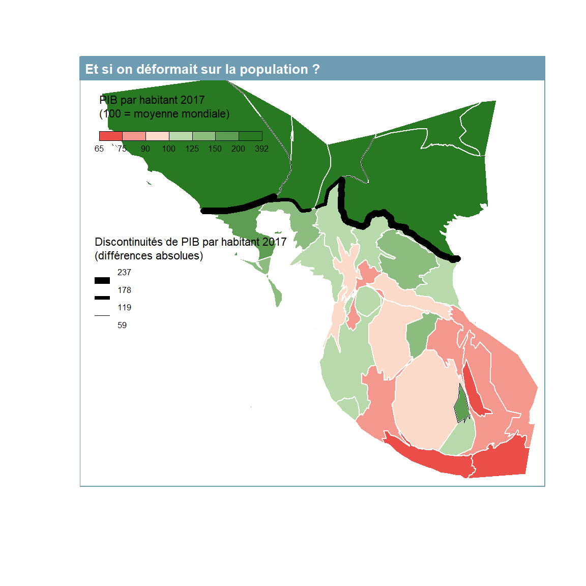
- Border Control
library(osmdata)## Data (c) OpenStreetMap contributors, ODbL 1.0. http://www.openstreetmap.org/copyright# Convert bbox in WGS84
bbox <- st_transform(bbox, 4326)
# define and launch the query
opqbox <- opq(bbox = bbox , timeout = 5000)
opquery <- add_osm_feature(opq = opqbox, key = "barrier", value = "border_control")
feat <- osmdata_sf(opquery)
# Extraire les points qui répondent à la requête
featpt <- st_transform(feat$osm_points, prj)
featpt <- featpt[featpt[["barrier"]] %in% "border_control", ]
# Extraire les polygones qui répondent à la requête
featpo <- st_transform(feat$osm_polygons, prj)
st_geometry(featpo) <- st_centroid(st_geometry(featpo))
featpo$osm_id <- row.names(featpo)
featpt <- rbind(featpt[, c("osm_id", "geometry")], featpo[, c("osm_id", "geometry")])
poi_osm <- st_intersection(x = featpt, st_geometry(subregions1))## Warning: attribute variables are assumed to be spatially constant
## throughout all geometries# Représentation des points extraits
lay()
plot(st_geometry(poi_osm), bg = "orange", col = "black", pch = 21, cex = 0.8, add = TRUE)
# Create grid
grid <- st_make_grid(subregions1, cellsize = 50000)
grid <- st_sf(grid)
# Compter le nombre de postes de police par points de grille
grid$ncops <- lengths(st_covers(grid, poi_osm))
grid$dcops <- grid$ncops / set_units(st_area(grid), "km^2")
# Plusieurs façons de visualiser les résultats (tests)
grid_ncont <- cartogram_ncont(grid, "ncops")
plot(grid_ncont$geometry, col="red", add = T)
propSymbolsLayer(grid, var = "ncops", col = "red", symbols = "square", add = T,
legend.pos = "topright",
legend.title.txt = "Nombre de postes frontière\n(zones de 50km²)")
choroLayer(x = grid, var = "ncops",
breaks = c(0.535, 5, 10,20,66),
col = carto.pal(pal1 = "pink.pal", n1 = 4),
legend.pos = "topright",
legend.title.txt = "Nombre de postes frontière\n(zones de 50km²)",
border = NA,
add = TRUE)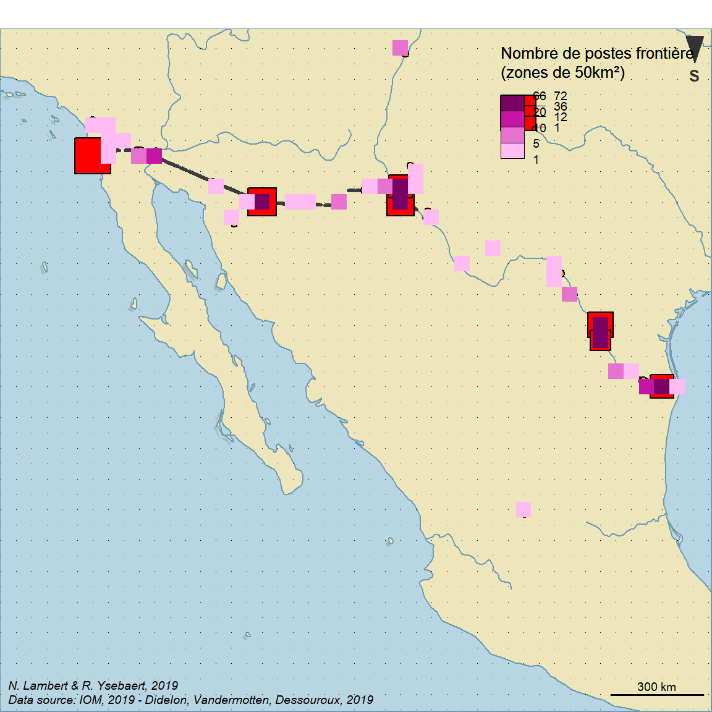
Migrations
Cartographies du nombre de migrants morts à la frontières
- Import (et mise en forme) des données de l’OIM
iom <- read.csv("data/iom/MissingMigrants-Global-2019-09-04T11-59-55.csv", stringsAsFactors = F)
iom <- iom[(iom$Location.Coordinates)!="",]
latlon <- matrix(as.numeric(unlist(strsplit(iom$Location.Coordinates, split = ", "))), ncol = 2, byrow = T)
colnames(latlon) <- c("lat", 'lon')
iom <- cbind(iom, latlon)
iom <- iom[,c("Web.ID","Reported.Year","Total.Dead.and.Missing","Number.of.Survivors","Region.of.Incident","lat","lon")]
colnames(iom) <- c("id","year","deads","survivors","region","latitude","longitude")
iom$deads <- as.numeric(iom$deads)## Warning: NAs introduced by coercioniom <- iom[!is.na(iom$deads),]
iom$latitude <- as.numeric(iom$latitude)
iom$longitude <- as.numeric(iom$longitude)
iom_sf <- st_as_sf(iom, coords = c("longitude", "latitude"), crs = 4326, agr = "constant")
iom_sf <- st_transform(iom_sf,crs = prj)- Comparaison régionale
par(mar=c(10,8,4,2))
med <- aggregate(iom_sf$deads,list(iom_sf$region), sum, simplify = TRUE )
colnames(med) <- c("region","nb")
total <- round(sum(med$nb),-2)
cols <- rep("#ffbaba",length(med$region))
cols[c(7,15)] <- "red"
barplot(med$nb, ylab="Number of persons", names.arg=med$region, las=2, border="#991313",col=cols)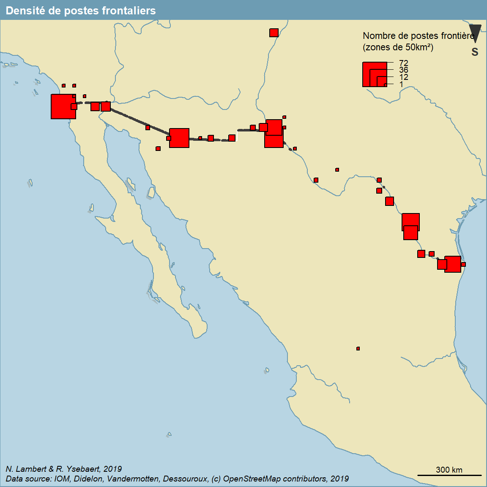
- Evolution temporelle
iom_sf <- iom_sf[iom_sf$region =="US-Mexico Border",]
st_bbox(iom_sf)## xmin ymin xmax ymax
## -1342784.0 -739750.5 793341.2 1317849.8par(mar=c(5,8,4,2))
med <- aggregate(iom_sf$deads,list(iom_sf$year), sum, simplify = TRUE )
colnames(med) <- c("year","nb")
total <- round(sum(med$nb),-2)
med[med$year==2019,"year"] <- "2019*"
barplot(med$nb, xlab=paste0("Total over the perdiod: ",total,"\n(*) from January 1 to Sept. 3 2019"), ylab="Number of persons", names.arg=med$year,
border="#991313",col=c("red","red","red","red","red","#ffbaba"))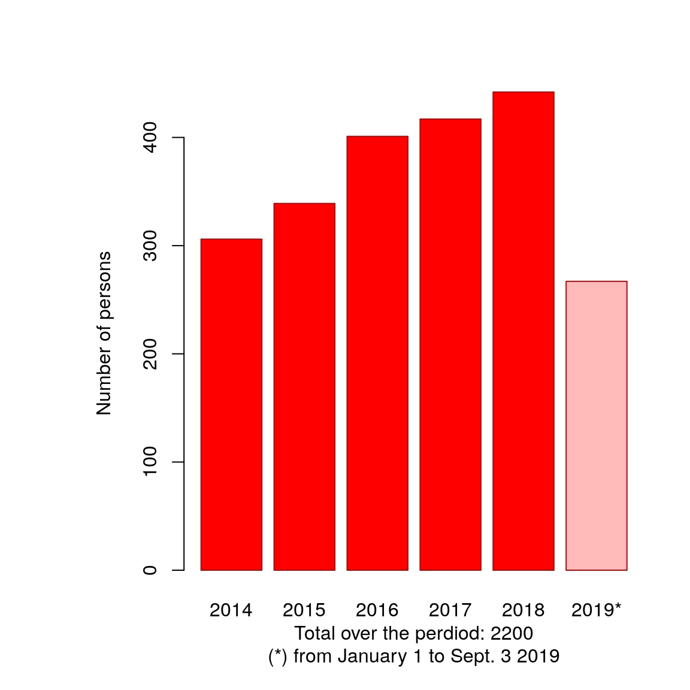
- Carte de localisation
lay("USA-Mexico border")
plot(st_geometry(iom_sf), pch=20, col= "#eb3850", cex = 0.5, add=T)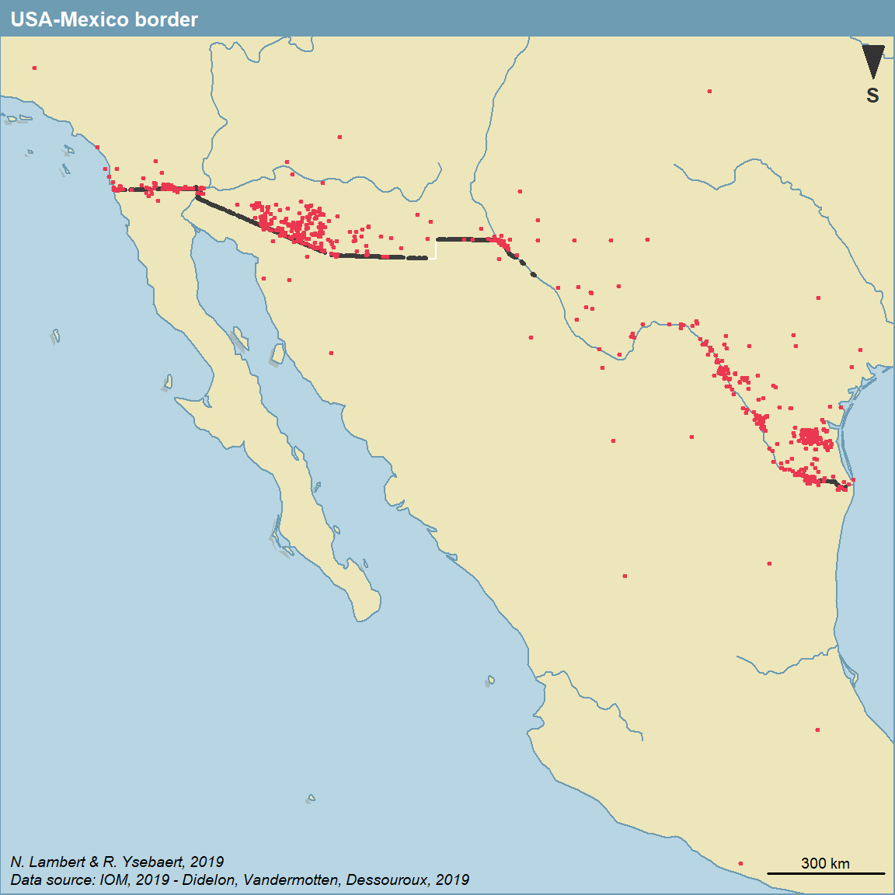
- Symboles proportionnels
lay("USA-Mexico border")
propSymbolsLayer(x = iom_sf, var = "deads",
symbols = "circle", col = "#eb3850",
legend.pos = "left", border = "black", lwd = 0.5,
legend.title.txt = "Dead\nand missing\nmigrants,\n2014 - 2019",
legend.style = "e")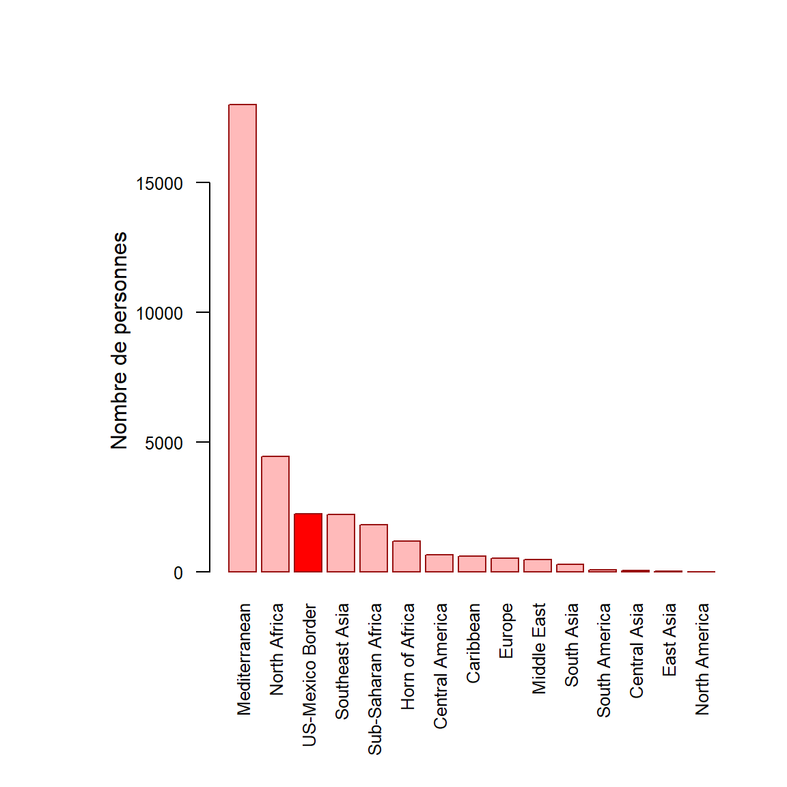
- Cartogrammes de Dorling
iom_sf$m_weight <- 1
iom_sf$m_weight[iom_sf$deads > 1] <- 0.5
iom_sf$m_weight[iom_sf$deads >= 25] <- 0
deathsdor <- cartogram_dorling(x = st_jitter(iom_sf),weight = "deads", m_weight = iom_sf$m_weight, k = .4)
lay("USA-Mexico border")
plot(st_geometry(deathsdor), pch=20, col= "#eb3850", border ="#ede6bb", cex = 0.1, add=T)
plot(st_geometry(fences), col= "#3d3c3c", lwd = 3 ,add= T)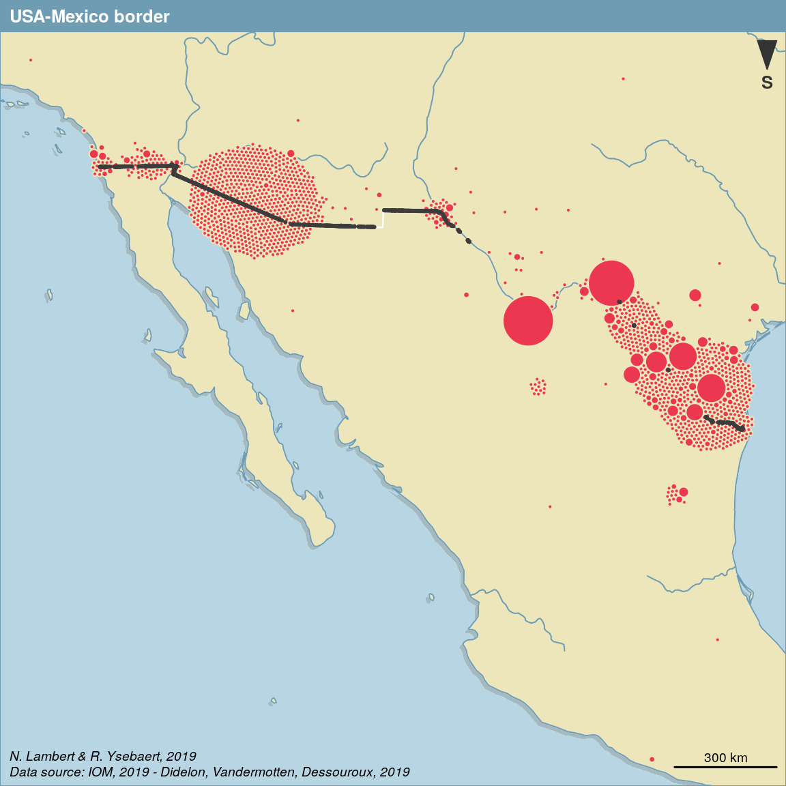
- Cartogrammes de Dorling (après désagrégation)
all <- iom_sf[,c("id","deads","year","geometry")]
iom_unique <- all[all$deads == 1,]
iom_multi <- all[all$deads > 1,]
for (i in 1:dim(iom_multi)[1]){
nb <- as.numeric(iom_multi[i,"deads"])[1]
tmp <- iom_multi[i,]
tmp$deads <- 1
for (j in 1:nb){ iom_unique <- rbind(iom_unique,tmp)}
}
deathsdor2 <- cartogram_dorling(x = st_jitter(iom_unique),weight = "deads", k = .004)
lay("USA-Mexico border")
plot(st_geometry(deathsdor2), pch=20, col= "#eb3850", border ="#ede6bb", cex = 0.1, add=T)
plot(st_geometry(fences), col= "#3d3c3c", lwd = 3 ,add= T)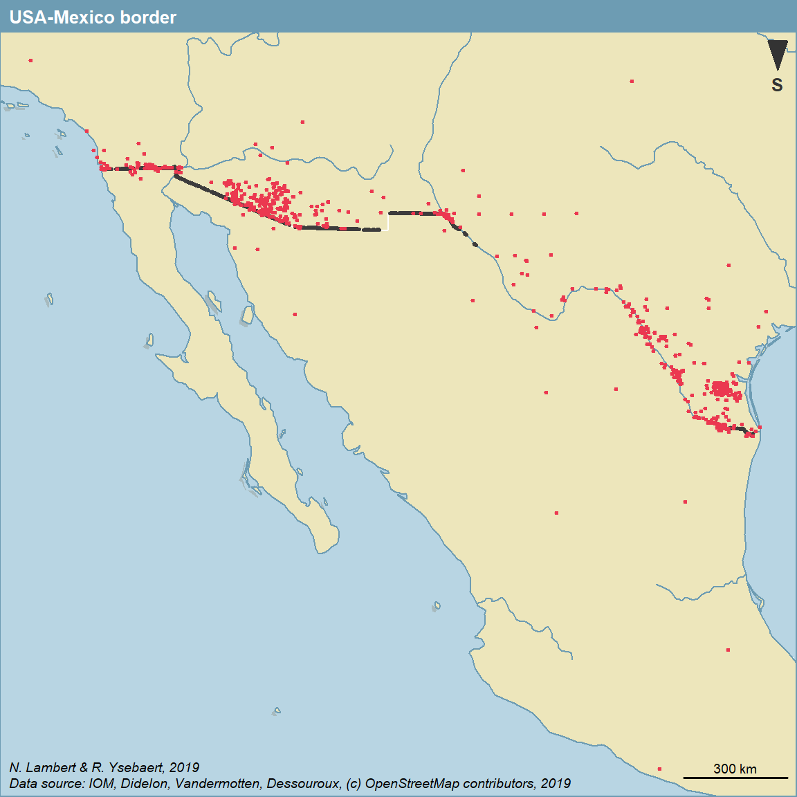
- Geoweb (leaflet)
iom <- read.csv("data/iom/MissingMigrants-Global-2019-09-04T11-59-55.csv", stringsAsFactors = F)
iom <- iom[(iom$Location.Coordinates)!="",]
iom <- iom[iom$Region.of.Incident =="US-Mexico Border",]
latlon <- matrix(as.numeric(unlist(strsplit(iom$Location.Coordinates, split = ", "))), ncol = 2, byrow = T)
colnames(latlon) <- c("lat", 'lon')
iom <- cbind(iom, latlon)
iom <- iom[,c("Reported.Year","Total.Dead.and.Missing","lat","lon","Location.Description","Cause.of.Death","Information.Source")]
colnames(iom) <- c("year","deads","lat","lon","location","cause","source")
fences <- geojson_sf("data/data.world/border-fence.geojson")
# Disaggregation
iom_unique <- iom[iom$deads == 1,]
iom_multi <- iom[iom$deads > 1,]
for (i in 1:dim(iom_multi)[1]){
nb <- as.numeric(iom_multi[i,"deads"])[1]
tmp <- iom_multi[i,]
tmp$deads <- 1
for (j in 1:nb){ iom_unique <- rbind(iom_unique,tmp)}
}
iom <- iom_unique
pins <- makeIcon(
iconUrl = "data/pin.svg",
iconWidth = 30, iconHeight = 30,
iconAnchorX = 15, iconAnchorY = 15
)
iom$label <- paste0(
"<h1>",iom$cause,"</h1>
<h3>year: </b>",iom$year,"<br/>
location: ",iom$location,"</h3>
<i>Source: ",iom$source,"</i>"
)m <- leaflet(iom) %>%
addProviderTiles(providers$Esri.WorldStreetMap) %>%
setView(lng = -104, lat = 30, zoom = 06) %>%
addMarkers(~lon, ~lat, popup = ~label, clusterOptions = markerClusterOptions(), icon = pins ) %>%
addScaleBar(position = "bottomleft") %>%
addPolylines(data = fences, color = "black", weight = 7, opacity = 1)
m— R infos —
Version de R
R.version## _
## platform x86_64-pc-linux-gnu
## arch x86_64
## os linux-gnu
## system x86_64, linux-gnu
## status
## major 3
## minor 4.4
## year 2018
## month 03
## day 15
## svn rev 74408
## language R
## version.string R version 3.4.4 (2018-03-15)
## nickname Someone to Lean OnSession
sessionInfo()## R version 3.4.4 (2018-03-15)
## Platform: x86_64-pc-linux-gnu (64-bit)
## Running under: Ubuntu 18.04.3 LTS
##
## Matrix products: default
## BLAS: /usr/lib/x86_64-linux-gnu/blas/libblas.so.3.7.1
## LAPACK: /usr/lib/x86_64-linux-gnu/lapack/liblapack.so.3.7.1
##
## locale:
## [1] LC_CTYPE=en_US.UTF-8 LC_NUMERIC=C
## [3] LC_TIME=fr_FR.UTF-8 LC_COLLATE=en_US.UTF-8
## [5] LC_MONETARY=fr_FR.UTF-8 LC_MESSAGES=en_US.UTF-8
## [7] LC_PAPER=fr_FR.UTF-8 LC_NAME=C
## [9] LC_ADDRESS=C LC_TELEPHONE=C
## [11] LC_MEASUREMENT=fr_FR.UTF-8 LC_IDENTIFICATION=C
##
## attached base packages:
## [1] stats graphics grDevices utils datasets methods base
##
## other attached packages:
## [1] osmdata_0.1.1 ggplot2_3.2.1 OECD_0.2.4
## [4] units_0.6-5 SpatialPosition_2.0.0 leaflet_2.0.2
## [7] cartogram_0.1.1 cartography_2.2.1 geojsonsf_1.3.0
## [10] rnaturalearth_0.1.0 sf_0.8-0
##
## loaded via a namespace (and not attached):
## [1] httr_1.4.1 jsonlite_1.6
## [3] shiny_1.4.0 assertthat_0.2.1
## [5] sp_1.3-1 highr_0.8
## [7] yaml_2.2.0 pillar_1.4.2
## [9] lattice_0.20-35 glue_1.3.1
## [11] digest_0.6.21 promises_1.1.0
## [13] rvest_0.3.4 rsdmx_0.5-13
## [15] colorspace_1.4-1 htmltools_0.4.0
## [17] httpuv_1.5.2 plyr_1.8.4
## [19] XML_3.98-1.20 pkgconfig_2.0.3
## [21] raster_3.0-7 questionr_0.7.0
## [23] bookdown_0.14 purrr_0.3.2
## [25] xtable_1.8-4 scales_1.0.0
## [27] later_1.0.0 tibble_2.1.3
## [29] withr_2.1.2 lazyeval_0.2.2
## [31] packcircles_0.3.3 magrittr_1.5
## [33] crayon_1.3.4 mime_0.7
## [35] evaluate_0.14 xml2_1.2.2
## [37] lwgeom_0.1-7 class_7.3-14
## [39] tools_3.4.4 stringr_1.4.0
## [41] munsell_0.5.0 isoband_0.2.0
## [43] compiler_3.4.4 e1071_1.7-2
## [45] rlang_0.4.0 classInt_0.4-1
## [47] grid_3.4.4 RCurl_1.95-4.12
## [49] rstudioapi_0.10 htmlwidgets_1.5.1
## [51] crosstalk_1.0.0 miniUI_0.1.1.1
## [53] bitops_1.0-6 labeling_0.3
## [55] rmarkdown_1.16 gtable_0.3.0
## [57] codetools_0.2-15 DBI_1.0.0
## [59] curl_4.2 markdown_1.1
## [61] R6_2.4.0 lubridate_1.7.4
## [63] knitr_1.25 dplyr_0.8.3
## [65] rgdal_1.4-4 fastmap_1.0.1
## [67] rgeos_0.5-2 KernSmooth_2.23-15
## [69] stringi_1.4.3 rmdformats_0.3.5
## [71] Rcpp_1.0.2 tidyselect_0.2.5
## [73] xfun_0.10 rnaturalearthdata_0.1.0